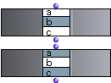

OpenMusic DocumentationHiérarchie de section : OM 6.6 User Manual > Visual Programming II > Interface Boxes > List Boxes
OpenMusic DocumentationHiérarchie de section : OM 6.6 User Manual > Visual Programming II > Interface Boxes > List Boxes
Navigation : page précédente | page suivante
Attention, votre navigateur ne supporte pas le javascript ou celui-ci à été désactivé. Certaines fonctionnalités de ce guide sont restreintes.
Selection : List Boxes
List selection boxes allow to select one or several items among a list, return and use it/them in downstream computations.
There exist two list selection boxes :
single-item-list
multi-item-list
Features
Inputs and Outputs

|
List selection boxes have one input and one output :
|

|
To set the content of a box :
When evaluated, the box returns the selected item. |
Default Item
By default, the first item is selected and reset when the box is initialized.
Lock the Box to Preserve Its Items
If the box is not locked, the selected item as well as the list of items will be reinitialized when the box is evaluated.
Boxes
Single-Item-List
The single-item-list allows to select only one item at a time.
To select an item,
press
bto lock the box,click on an item.

Multi-Item-List
This box allows to select one or more items, which are returned as a list.
The multi-item-list is edited and used as as single-item-list .
To select consecutive items or all the items of the box,
SHIFTclick on the items or click and drag them.To select independent items,
Cmdclick on them.

A Musical Application : an Extended Example
Building a Triad with an Item-List-Box, a Button-Box, and a Check Box
Références :
Plan :
Navigation : page précédente | page suivante
A propos...(c) Ircam - Centre Pompidou